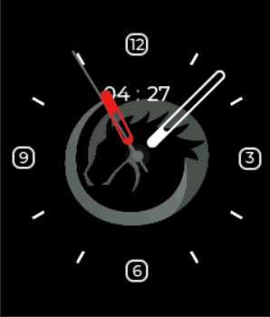

<!DOCTYPE lake>
<p data-lake-id="u825516d1" id="u825516d1" style="text-indent: 2em; text-align: center"></p><p data-lake-id="u601b0746" id="u601b0746" style="text-indent: 2em"><span class="lake-fontsize-12" data-lake-id="ub0e8880a" id="ub0e8880a" style="color: rgb(55, 65, 81); background-color: rgb(247, 247, 248)">LVGL（Light and Versatile Graphics Library）是一个开源的图形用户界面库，旨在提供轻量级、可移植、灵活和易于使用的图形用户界面解决方案。</span></p><p data-lake-id="uc1f5615c" id="uc1f5615c" style="text-indent: 2em"><span class="lake-fontsize-12" data-lake-id="u26fd9795" id="u26fd9795" style="color: rgb(55, 65, 81); background-color: rgb(247, 247, 248)">它适用于嵌入式系统，可以在不同的操作系统、微控制器和图形加速器上运行。LVGL的核心代码是用C语言编写的，支持多种显示设备和输入设备，包括液晶显示屏、OLED显示屏、触摸屏、按键和编码器等。</span></p><p data-lake-id="u9c9d38f7" id="u9c9d38f7" style="text-indent: 2em"><span class="lake-fontsize-12" data-lake-id="u20a54cce" id="u20a54cce" style="color: rgb(55, 65, 81); background-color: rgb(247, 247, 248)">LVGL提供了一系列组件和小部件，例如文本框、按钮、滑动条、表格、菜单等，可以快速构建交互式用户界面。LVGL还具有高度自定义的能力，用户可以根据需要修改或扩展库的功能。总之，LVGL是一个功能强大、易于使用的图形用户界面库，可以帮助开发人员在嵌入式系统中实现各种交互式应用程序。</span></p><p data-lake-id="u38741d5e" id="u38741d5e"><span data-lake-id="u28f67fef" id="u28f67fef">​</span><br/></p><h1 data-lake-id="jKQ68" id="jKQ68"><span data-lake-id="u7956ede1" id="u7956ede1">lvgl的特点</span></h1><ol list="ub78bfffe"><li data-lake-id="ude217d49" fid="uda8e24e2" id="ude217d49"><span class="lake-fontsize-12" data-lake-id="u1a999935" id="u1a999935" style="color: rgb(55, 65, 81); background-color: rgb(247, 247, 248)">轻量级和高效：LVGL的核心代码非常小巧，可以在资源受限的嵌入式系统上运行，同时具有出色的性能和速度。</span></li><li data-lake-id="u07bf8ebd" fid="uda8e24e2" id="u07bf8ebd"><span class="lake-fontsize-12" data-lake-id="uf95a5275" id="uf95a5275" style="color: rgb(55, 65, 81); background-color: rgb(247, 247, 248)">可移植性：LVGL支持多种处理器架构和操作系统，可以在不同的平台上使用。</span></li><li data-lake-id="udac6816a" fid="uda8e24e2" id="udac6816a"><span class="lake-fontsize-12" data-lake-id="u1be72b53" id="u1be72b53" style="color: rgb(55, 65, 81); background-color: rgb(247, 247, 248)">灵活性：LVGL提供了大量的可自定义选项，包括主题、字体、颜色、大小、形状等，可以根据项目需求进行灵活定制。</span></li><li data-lake-id="u19b9fc02" fid="uda8e24e2" id="u19b9fc02"><span class="lake-fontsize-12" data-lake-id="u56c39bec" id="u56c39bec" style="color: rgb(55, 65, 81); background-color: rgb(247, 247, 248)">易于使用：LVGL提供了简单易懂的API和丰富的文档，使开发人员可以快速上手，构建复杂的图形用户界面。</span></li><li data-lake-id="u4a4c589f" fid="uda8e24e2" id="u4a4c589f"><span class="lake-fontsize-12" data-lake-id="uec2ddf01" id="uec2ddf01" style="color: rgb(55, 65, 81); background-color: rgb(247, 247, 248)">多种输入设备支持：LVGL支持多种输入设备，包括触摸屏、按键、编码器等，可以满足不同应用场景的需求。</span></li><li data-lake-id="ud3f0184f" fid="uda8e24e2" id="ud3f0184f"><span class="lake-fontsize-12" data-lake-id="u75b2a490" id="u75b2a490" style="color: rgb(55, 65, 81); background-color: rgb(247, 247, 248)">多种组件支持：LVGL提供了多种常用组件，如文本框、按钮、滑动条、表格、菜单等，同时还支持自定义组件。</span></li><li data-lake-id="u38c6614a" fid="uda8e24e2" id="u38c6614a"><span class="lake-fontsize-12" data-lake-id="ub195472e" id="ub195472e" style="color: rgb(55, 65, 81); background-color: rgb(247, 247, 248)">兼容性：LVGL支持多种显示设备，包括LCD、OLED、ePaper等，可以适应不同的显示分辨率和屏幕尺寸。</span></li><li data-lake-id="ufc30b6e4" fid="uda8e24e2" id="ufc30b6e4"><span class="lake-fontsize-12" data-lake-id="ub2b5a537" id="ub2b5a537" style="color: rgb(55, 65, 81); background-color: rgb(247, 247, 248)">社区支持：LVGL有一个活跃的社区，用户可以在社区中获得支持和帮助，同时也可以分享自己的经验和贡献代码。</span></li></ol><p data-lake-id="uf2d6244c" id="uf2d6244c"><br/></p><p data-lake-id="ua9b0489b" id="ua9b0489b"><span class="lake-fontsize-12" data-lake-id="u7e38da4c" id="u7e38da4c">参考文档：</span></p><p data-lake-id="u1c50b2e4" id="u1c50b2e4"><a data-lake-id="uebf47327" href="https://docs.lvgl.io/8.3/" id="uebf47327" rel="noopener noreferrer" target="_blank"><span class="lake-fontsize-12" data-lake-id="u2652893a" id="u2652893a">https://docs.lvgl.io/8.3/</span></a></p><p data-lake-id="ua47a14f0" id="ua47a14f0"><a data-lake-id="u523c326a" href="https://docs.lvgl.io/9.3/" id="u523c326a" rel="noopener noreferrer" target="_blank"><span class="lake-fontsize-12" data-lake-id="ud1e46282" id="ud1e46282">https://docs.lvgl.io/9.3/</span></a></p><p data-lake-id="ubea8f75e" id="ubea8f75e"><br/></p>